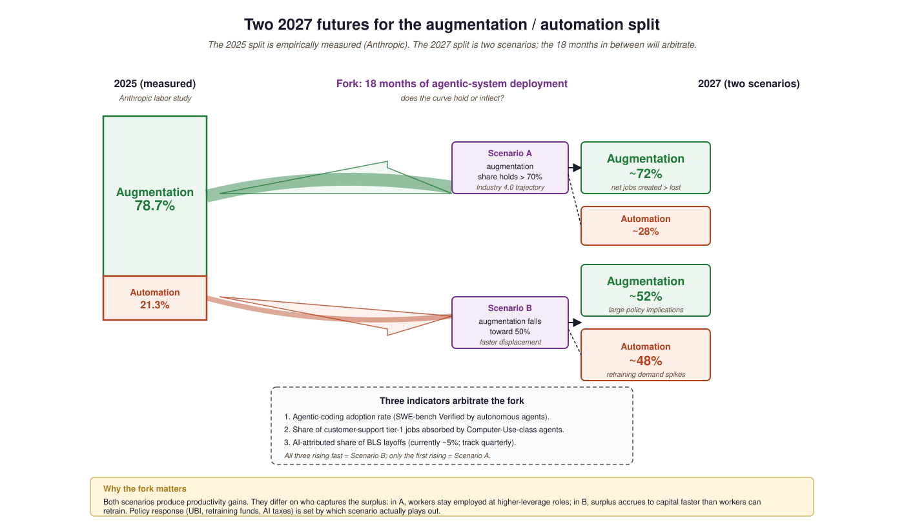
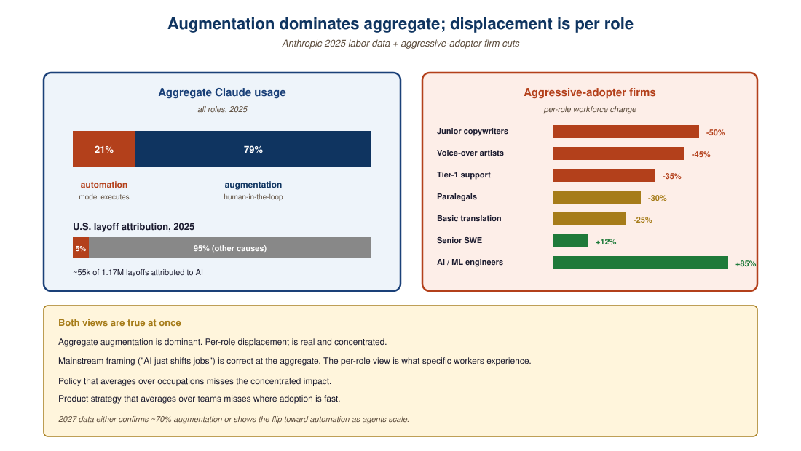

"The capability frontier is the headline. The labor market is the lede. The shape of the gap is where the policy lives."
Census, Labor-Market-Reader AI Agent
- Read 2025-26 labor-market data sources (Anthropic study, WEF Future of Jobs, BLS, AI Skills Shift) by sample, scope, and measurement caveat.
- Distinguish augmentation from automation in measured AI usage, and predict which workloads will flip first.
- Identify the role-level concentration that aggregate "5% of layoffs" numbers obscure.
- Track three 2027 indicators that will arbitrate the augmentation-vs-displacement scenario fork.
If the capability frontier is the headline, the labor market is the lede. The 2025-26 data is unusually clean: Anthropic, WEF, BLS, and academic mappings converge on "augmentation dominates today, displacement is the open 2027 question". Whether the augmentation share holds when agentic systems take on work end-to-end is what the next eighteen months will arbitrate.
Prerequisites
This section assumes the AGI-timeline vocabulary from Section 82.3 and the LLM-policy framing from Section 55.1.
If the capability frontier is the headline, the labor market is the lede. The 2025 data is unusually clean: Anthropic's labor-market study reports that 35.9% of U.S. workers used generative AI by December 2025, the WEF Future of Jobs Report 2025 projects 92 million jobs displaced and 170 million created by 2030 (net +78M), and the AI Skills Shift paper (April 2026) is the most comprehensive academic mapping of skill obsolescence and emergence to date.
This section walks the data. The honest summary up front: through mid-2026, the dominant pattern is augmentation rather than automation, but the augmentation is concentrated in specific occupations and the curve may be inflecting toward displacement as agentic systems mature. Both possibilities have meaningful evidence; the next eighteen months will arbitrate.
82.4.1 The augmentation finding
Anthropic's labor-market data finding that 78.7% of Claude interactions are augmentation (rather than automation) was first published in their February 2025 "Economic Index" report. The methodology was reportedly inspired by the Bureau of Labor Statistics' O*NET taxonomy, which classifies every U.S. occupation by a structured task ontology. Anthropic's team mapped Claude conversations into O*NET tasks; the BLS team has since cited the report in two of their own working papers.
Anthropic's labor-market data, drawn from anonymized Claude usage, finds that 78.7% of measured AI interactions are augmentation: a human is using the model to do their job better, faster, or with broader scope. Only 21.3% of interactions are automation, where the model performs a task with minimal human review. The augmentation share has been roughly stable through 2024-25; the 2026 question is whether agentic deployments flip it.
82.4.2 The layoffs question
2025 saw approximately 1.17 million U.S. layoffs, of which ~55,000 were attributed to AI (~5%). That is a real number but not a dominant one. The harder-to-measure effect is hiring slowdown: companies that did not lay off workers but also did not backfill departures because AI productivity gains made the role redundant on attrition. Anthropic's study and the WEF report both flag this as the largest measurement-gap in current data.
82.4.3 Skill obsolescence and emergence
The AI Skills Shift paper maps three trajectories: skills that are stable (interpersonal, judgment, leadership), skills that are obsolescing (routine writing, basic coding, standard data analysis), and skills that are emerging (prompt engineering, AI oversight, model evaluation, RAG architecture). The paper's headline claim is that the transition windows are short, 2 to 5 years per role, and that retraining infrastructure is the binding constraint, not the underlying displacement.
82.4.4 Comparing the labor-market data sources
| Source | Sample | Headline finding | Caveats |
|---|---|---|---|
| Anthropic labor study | Claude usage logs | 78.7% augmentation, 21.3% automation | Claude users skew technical |
| WEF Future of Jobs 2025 | Employer survey, 1,000+ firms | 92M displaced, 170M created by 2030 | Self-reported projections |
| U.S. BLS data | Official statistics | ~5% of 2025 layoffs AI-attributed | Layoff cause classification is noisy |
| AI Skills Shift (April 2026) | Academic mapping | 2-5 year transition windows | Mapping, not forecast |
| CIO 2025 review | Industry analyst synthesis | 2.5-7% U.S. employment at risk | Range reflects definition spread |

The 78.7% augmentation share comes from 2024-25 Claude usage, which is dominated by individual workers calling the API directly. The 2026 wave of products is different: agentic deployments where the model executes multi-step work with reduced human review (the Computer Use API, agentic coding, autonomous customer-support agents). If those products scale, the automation share rises mechanically. Whether the absolute employment number falls, however, depends on whether displaced workers can transition into the AI-supervisor and AI-orchestrator roles the same trends create.
"5% of 2025 layoffs were AI-attributed" averages across 12,000+ U.S. occupations. Within specific roles, the effect is much higher: junior writers, paralegals, voice-over artists, basic translation, customer-support tier-1, basic graphic design have all seen 20-50% workforce contractions in the firms that adopted aggressively. The mainstream-economics critique of "AI just shifts the jobs" is mostly true at the aggregate, mostly false at the role level. Both can be true simultaneously and both matter for policy.

A 2025 software-engineering team that adds Claude / Cursor / Copilot tooling typically reports a 30-50% individual productivity gain on coding tasks. The team headcount usually does not drop; instead, the team ships more features and tackles a larger backlog. The role changes: less time writing code, more time reviewing code, more time on design and architecture. This is augmentation in the cleanest sense. Whether it stays this way after agentic coding tools mature (Claude Code, Cursor's background agents, GPT-5's auto-coding) is the question of 2027.
A simple operational test: is there a human reviewing model output before the work counts as done? If yes, it is augmentation; if no, it is automation. By this test, "Claude wrote my code and I committed it after reading" is augmentation; "the agent opened a PR, ran CI, and merged on green" is automation. The 2026 inflection point will be when agentic tools move enough of the second category to flip the aggregate share. Track this distinction in your own team's workflow, not the vendor's marketing.
82.4.5 What 2027 has to settle
The single unsettled question is whether the augmentation share holds when agentic systems take on work end-to-end. The 2026 indicators are mixed: agentic coding tools have shipped and are being used, but full autonomous task-completion is still narrow. By the end of 2027 we should have hard data: either the augmentation share has stayed above 70% (mainstream Industry 4.0-style trajectory) or it has fallen toward 50% (faster-than-projected displacement). Either result has policy and product implications larger than any single benchmark. The book closes in Section 82.5 with what 2026 actually settled and what remains genuinely open.
- 2025 measured 78.7% augmentation, 21.3% automation across Claude usage; aggregate AI-attributed layoffs were ~5% of 1.17M U.S. layoffs.
- Aggregate numbers hide role-level concentration: junior writers, paralegals, tier-1 customer support, and basic graphic design have already seen 20-50% workforce contraction in aggressive adopters.
- The 2027 fork: agentic deployments scale (automation share rises to ~48%) or they stay narrow (augmentation share holds above 70%).
- Three indicators to track: agentic-coding adoption rate, tier-1 customer-support absorption, BLS AI-attributed-layoff share.
Show Answer
Show Answer
What's Next?
In the next section, Section 82.5: What 2026 Settled (and What Remains Open), we build on the material covered here.